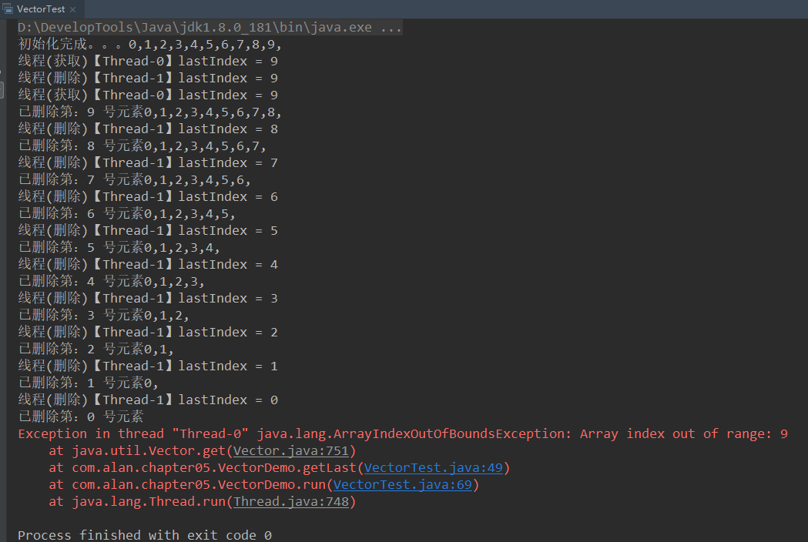
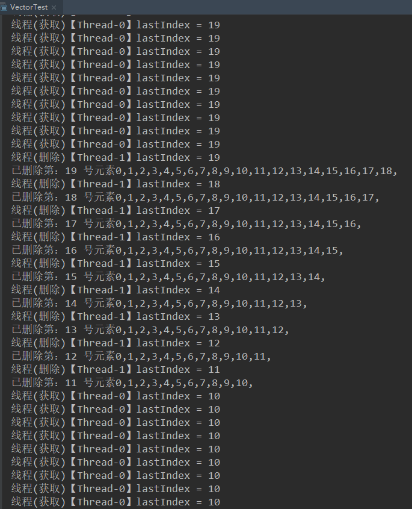

同步容器类
Java 中的同步容器类 包括 Vector 和 Hashtable 以及 Collections.synchronizedXxx 等工厂方法创建的容器，这些同步容器类的实现线程安全的方式是：将类中的每一个共有方法都添加锁，进行同步，每次只能有一个线程访问容器的状态。
同步容器类的问题
同步容器是线程安全的，但是在某些
复合操作的情况下会出现一些奇怪的错误，容器的常见复合操作包括：迭代跳转(找到当前元素的下一个)条件运算(若不包含则添加)
现在假如我们有一个Vector类型的容器，存放了100个元素，我们有两个线程分别调用两个方法，假如线程A调用getLast方法，线程B调用deleteLast方法，代码如下：
import java.util.Vector;
/**
* Vector 是同步容器类，虽然是线程安全的，但在某些情况下需要额外的枷锁来保护复合操作
* 例如：线程A调用getList，并且获取到 lastIndex = 10 然后释放了锁;
* 线程B获取到锁，调用 deleteLast 同样也获取到 lastIndex = 10; 如果线程B继续获取到锁调用了remove，即将最后一个元素删除
* 然后线程A又重新获取到锁调用 get(10) 则找不到元素，处罚异常
*
* @author Alan Wang
* @date 2018/11/5 22:25
*/
public class VectorTest {
public static void main(String[] args) {
Vector<Integer> list = new Vector<>();
for (int i=0; i<10; i++) {
list.add(i);
}
System.out.print("初始化完成。。。");
for (int i=0; i<list.size(); i++) {
System.out.print(i+",");
}
System.out.println();
VectorDemo demo = new VectorDemo(list);
// 启动第一个线程
Thread t1 = new Thread(demo);
t1.start();
// 启动第二个线程
Thread t2 = new Thread(demo);
t2.start();
}
}
class VectorDemo implements Runnable {
private Vector<Integer> list;
public VectorDemo(Vector<Integer> list) {
this.list = list;
}
public Object getLast(Vector list) {
// size 方法枷锁了
int lastIndex = list.size()-1;
if (lastIndex<0) {
return null;
}
System.out.println("线程(获取)【"+Thread.currentThread().getName()+"】lastIndex = "+lastIndex);
return list.get(lastIndex);
}
public void deleteLast(Vector list) {
int lastIndex = list.size() - 1;
System.out.println("线程(删除)【"+Thread.currentThread().getName()+"】lastIndex = "+lastIndex);
list.remove(lastIndex);
System.out.print("已删除第："+lastIndex+" 号元素");
for (int i=0; i<list.size(); i++) {
System.out.print(i+",");
}
}
@Override
public void run() {
String name = Thread.currentThread().getName();
while (list.size()>0) {
// 第一个线程调用 getLast
if ("Thread-0".equals(name)) {
this.getLast(this.list);
}
// 第二个线程调用 deleteLast
else if ("Thread-1".equals(name)) {
this.deleteLast(list);
}
}
}
}
执行的结果

然后我们来分析一下这个结果，首先线程0 拿到锁，获取到了 lastIndex = 9，然后释放锁，接着线程1 获取到锁，同样获取到 lastIndex = 9，然后锁又被 线程0 拿到了，此使 lastIndex 还是9，然后线程1 又拿到了锁开始删除操作，将下标为 9 的元素删除，释放锁后 线程0 通过上一次拿到的 lastIndex = 9 去获取元素，发现该元素已经不存在了，所以出现数组越界的异常。
通过该例子，可以很好的理解为什么同步容器在进行一些复合操作的时候会出现错误的结果。
解决该问题的方法是：给客户端枷锁，将 getLast 方法和 deleteLast 方法改为如下：
public Object getLast(Vector list) {
// size 方法枷锁了
synchronized (list) {
int lastIndex = list.size()-1;
if (lastIndex<0) {
return null;
}
System.out.println("线程(获取)【"+Thread.currentThread().getName()+"】lastIndex = "+lastIndex);
return list.get(lastIndex);
}
}
public void deleteLast(Vector list) {
synchronized (list) {
int lastIndex = list.size() - 1;
System.out.println("线程(删除)【"+Thread.currentThread().getName()+"】lastIndex = "+lastIndex);
list.remove(lastIndex);
System.out.print("已删除第："+lastIndex+" 号元素");
for (int i=0; i<list.size(); i++) {
System.out.print(i+",");
}
System.out.println();
}
}
这种情况下，getLast 中获取 lastIndex 和 get(lastIndex) 是一个原子操作，当获取到lastIndex后就立即将最后一个元素返回。 同样在 deleteLast 方法中获取 lastIndex 和 delete(lastIndex) 也是一个原则操作，当获取lastIndex后就立即将最后一个元素删除。
可能会出现的一种结果：

并发容器
同步容器 将所有对容器状态的访问都串行化，以此来实现线程安全，严重降低容器的并发性能，当多个线程竞争容器锁时，吞吐量严重降低。并发容器 是针对多线程访问设计的，改进了同步容器的性能问题，极大地提高伸缩性并降低风险。
ConcurrentHashMap 用来代替基于散列的同步Map容器，CopyOnWriteArrayList 用来替代以遍历操作为主的同步List
Java5 新增两种容器类型 Queue 和 BlockingQueueQueue 用来临时保存一组等待处理的元素，提供了几种实现：
ConcurrentLinkedQueue传统的先进先出队列PriorityQueue(非并发的) 优先队列
Queue 上的操作不会阻塞，若队列为空，获取元素的操作将返回控制
BlockingQueue 扩展了 Queue, 增加了可阻塞的插入和获取操作，如果队列为空，那么获取元素的操作将一直阻塞，知道队列中出现一个空用的元素。如果队列已满，那么插入操作将会一直阻塞，在 生产者-消费者 模式中，阻塞队列非常有用。
ConcurrentHashMap
HashMap 非同步容器，key 和 value 都允许 null 值。HashTable 同步容器，key 和 value 不允许 null 值。
ConcurrentHashMap 也是基于 HashCode 实现的 Map 容器，使用一种粒度更细的机制来提供了更高的并发性和伸缩性，这种机制成为分段锁，在这个机制下，任意数量的读取线程可以并发的访问map，执行读取的线程和执行写入操作的线程也可以同时并发的访问。